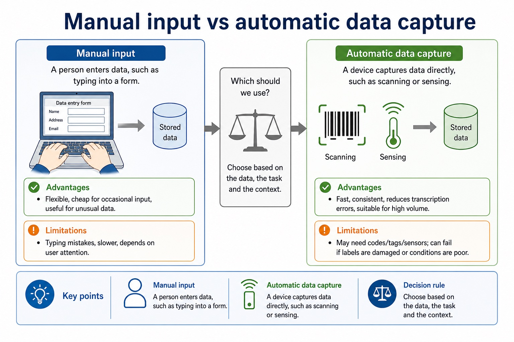

An embedded system is a computer system built into a larger device to perform one dedicated task or a closely related set of tasks. A microcontroller may integrate the processor, memory and input/output interfaces needed for that task.
Benefits can include low cost, low power use, small size and reliable, predictable automatic operation because the hardware and software are designed for a limited purpose. Drawbacks can include limited processing, storage and user interface, difficulty adding new functions, and dependence on the embedded controller: if it fails, the larger device may stop working. A valid comparison must link each point to the device and task.
A control system sends output signals to actuators and uses sensor feedback to determine the next control action.
One benefit must state a useful consequence of the dedicated design; one drawback must state a relevant limitation or failure consequence.
Worked example: Washing-machine controller
A dedicated microcontroller can read sensors and control the motor and valves with low power use and predictable timing. Its limited interface is acceptable for wash programs, but it cannot readily run unrelated applications, and a controller failure can prevent the whole machine from operating.
Core syllabus practice
Embedded systems: purpose, benefits and drawbacks: apply and assess
Targeted practice
1. What two features define an embedded system?
Show answer
It is built into a larger device and performs a dedicated task or closely related set of tasks.
2. Give one benefit of an embedded controller and explain its consequence.
Show answer
For example, low power use reduces energy or battery demand for the device.
3. Give one drawback of an embedded controller and explain its consequence.
Show answer
For example, limited resources make it difficult to add unrelated functions or run general-purpose software.
4. Why can failure of an embedded controller be serious?
Show answer
The larger device may lose the function controlled by that computer or stop operating.
Exam-style question
5 marks
A battery-powered medical monitor uses an embedded controller. Explain two benefits and two drawbacks of this design in context.
Show MS
Answer
Guidance
Marks
benefit such as low power, compact size or predictable automatic operation
Do not award bare adjectives such as 'small' or 'cheap' without a device-specific consequence.
1
first benefit linked to battery life, portability or continuous monitoring
1
drawback such as limited resources/upgrading/interface or controller dependence
1
first drawback linked to limited new functions or device failure
1
second distinct benefit or drawback correctly developed
1
Lesson 029 | 45 minutes | Paper 1 Section 3
Input is where the computer first meets the messy real world.
This lesson focuses on input devices and data capture. The exam skill is not
simply naming a device. You must explain how it captures data and why it is
suitable for the situation.
Describethe purpose of common input devices
Comparemanual and automatic data capture methods
Justifyinput device choices using accuracy, speed, cost and suitability
real world -> sensor/scanner/user -> digital data
A barcode reader is not "clever". It is just very good at not mistyping 13 digits before lunch.
Why this matters
Cambridge-style hardware questions reward suitability. "Keyboard" may be true; "keyboard because staff must type short codes occasionally" earns the mark.
Common error
Do not call every scanner a barcode reader. OCR, OMR, barcode and QR capture different patterns for different jobs.
Warm-up hook
A supermarket checkout scans an item, weighs fruit, accepts a typed discount code and reads a loyalty card. Which inputs are being captured?
Click one input. The useful exam habit is naming what data is captured, not just naming the hardware.
Knowledge point 1
What input devices do
1. CaptureThe device captures data from a user, document, object or environment.2. ConvertThe data is converted into a digital form the computer can process.3. Validate laterInput is not automatically correct. Validation and verification may still be needed.
What input devices do: source-grounded visual explanation.
Lesson fact: 1. Capture The device captures data from a user, document, object or environment.
Lesson fact: 2. Convert The data is converted into a digital form the computer can process.
Lesson fact: 3. Validate later Input is not automatically correct. Validation and verification may still be needed.
Knowledge point 2
Common input devices and what they capture
Device
Captures
Good use
Exam warning
Keyboard
Typed text/numbers
Short manual entries, corrections, commands
Slow and error-prone for long repeated codes
Barcode / QR reader
Encoded product, ticket or ID data
Fast repeated identification
Needs a readable code; does not capture handwriting
RFID / NFC reader
Data from a tag/card without contact
Access cards, library books, stock tracking
Range/security/cost must match scenario
OCR / OMR
Printed characters / shaded marks
Forms, exam answer sheets, printed documents
OCR reads characters; OMR detects marks
Sensor
Physical measurements
Temperature, light, pressure, motion systems
Usually automatic; often needs calibration
Common input devices and what they capture
Common input devices and what they capture: source-grounded visual explanation.
Lesson fact: Captures
Lesson fact: Good use
Lesson fact: Exam warning
Lesson fact: Keyboard
Lesson fact: Typed text/numbers
Lesson fact: Short manual entries, corrections, commands
Lesson fact: Slow and error-prone for long repeated codes
Lesson fact: Barcode / QR reader
Lesson fact: Encoded product, ticket or ID data
Lesson fact: Fast repeated identification
Lesson fact: Needs a readable code; does not capture handwriting
Lesson fact: RFID / NFC reader
Knowledge point 3
Manual input vs automatic data capture
Feature
Manual input
Automatic data capture
Method
A person enters data, such as typing into a form.
A device captures data directly, such as scanning or sensing.
Advantages
Flexible, cheap for occasional input, useful for unusual data.
Fast, consistent, reduces transcription errors, suitable for high volume.
Limitations
Typing mistakes, slower, depends on user attention.
May need codes/tags/sensors; can fail if labels are damaged or conditions are poor.
Manual input vs automatic data capture

Manual input vs automatic data capture: source-grounded visual explanation.
Lesson fact: Manual input
Lesson fact: Automatic data capture
Lesson fact: A person enters data, such as typing into a form.
Lesson fact: A device captures data directly, such as scanning or sensing.
Lesson fact: Advantages
Lesson fact: Flexible, cheap for occasional input, useful for unusual data.
Lesson fact: Fast, consistent, reduces transcription errors, suitable for high volume.
Lesson fact: Limitations
Lesson fact: Typing mistakes, slower, depends on user attention.
Lesson fact: May need codes/tags/sensors; can fail if labels are damaged or conditions are poor.
Interactive tool
Choose the input device
Worked examples
From device name to exam-worthy justification
Your turn
Practice with instant checking
Mistake debugging
Fix the weak input answer
"Use a keyboard because it is easy."
This is too vague. A stronger answer links feature to scenario: use a barcode reader because it captures product codes faster than typing and reduces transcription errors at a busy checkout.
"OMR reads printed words from a form."
OMR detects shaded marks or tick boxes. OCR recognises printed characters. The letter R is not enough; the middle letter matters.
Exam-style questions
Questions with expandable MS
Attempt first, then expand the mark scheme. Credit depends on accurate device role plus a scenario-linked reason.
Summary
Input device answers need a mechanism
Input deviceCaptures data from a user, object, document or environment.
Automatic captureReduces manual typing and is useful for repeated or high-volume data.
OCR vs OMROCR recognises characters; OMR detects marks.
Barcode / QRReads encoded data quickly if the code is present and readable.
SensorCaptures physical measurements, often automatically.
SuitabilityName the feature and link it to the scenario consequence.
Homework
Clear tasks
Create a two-column table: five input devices and the exact data each captures.
Write a 4-mark answer comparing barcode reader and keyboard for supermarket checkout input.
Choose a suitable input method for a school library, a greenhouse and an exam marking system. Give one reason for each.
Write one sentence explaining the difference between OCR and OMR.
Device table: include examples such as keyboard -> typed text; barcode reader -> encoded product ID; sensor -> physical measurement.
Checkout answer: barcode reader is faster and reduces transcription errors; keyboard remains useful for exceptions or manual correction.
Scenario choices: library can use barcode/RFID; greenhouse can use temperature/humidity sensors; exam system can use OMR for shaded multiple-choice sheets.
OCR/OMR: OCR recognises printed characters; OMR detects the position of shaded marks.